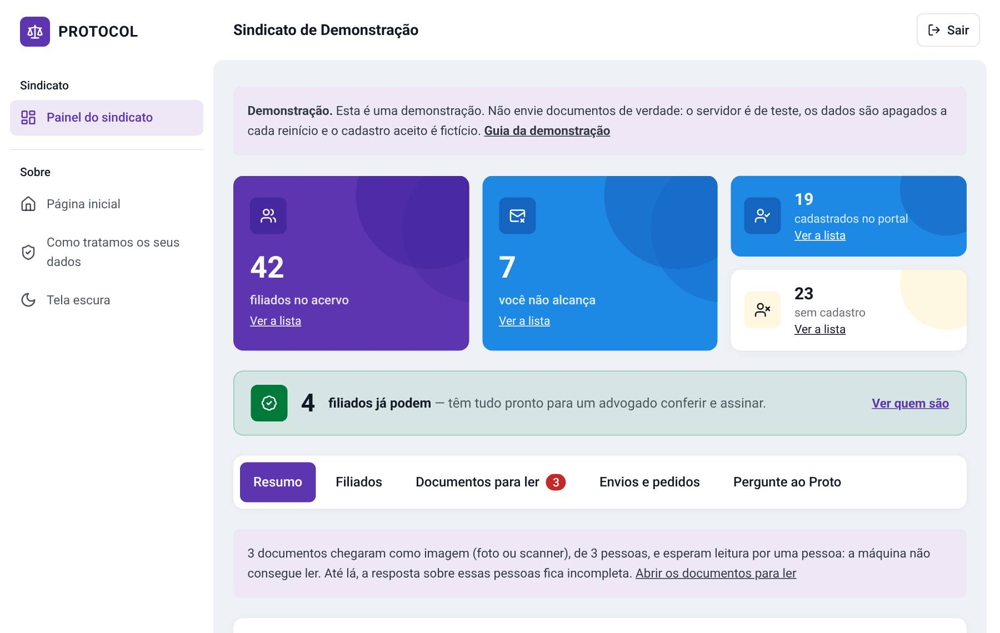
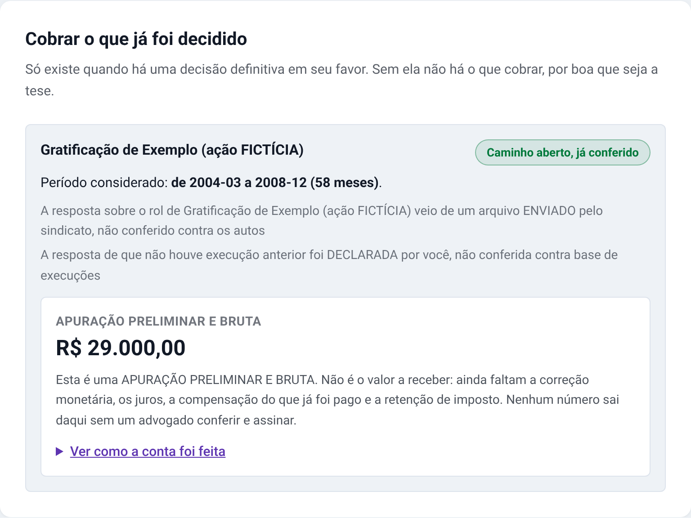

O portal que mostra a cada filiado onde ele está nas ações do sindicato.
O sindicato envia a planilha de filiados que já tem. O filiado envia os documentos pelo celular. O PROTOCOL responde, nome por nome: de quais ações a pessoa faz parte, o que já pode ser feito e o que ainda falta.
Como funciona
1. O sindicato envia a listaA planilha que já existe, do jeito que está. No mesmo dia sabe com quem não consegue falar, e por quê.
2. O filiado envia os documentosEntra sem senha, com um código que chega no e-mail do cadastro. Foto do papel serve.
3. Cada um recebe a sua respostaDe quais ações faz parte, o que pode ser feito, o que falta e de quem é a vez.

O painel do sindicato: a base, quem não se alcança e quantos já podem.

A tela do filiado: a ação, o período dele e a apuração preliminar.
O que o sindicato ganha
O retrato da base: quem falta, o que falta e o que resolver primeiro.
A lista nome por nome, com os contatos, que sai em planilha.
Menos ligação na sede: o filiado vê sozinho se o documento chegou.
O Proto, assistente que responde na hora ao filiado e à diretoria.
O que nós não fazemos
Não dizemos “pode” na dúvida: quando falta informação, a resposta é o que falta.
Não prometemos valor sem a conta. O que aparece é apuração preliminar, e diz isso.
Nada sai no nome de um filiado sem um advogado conferir e assinar.
Não pedimos senha nem certificado a ninguém.
Veja funcionando: protocol-demo.onrender.com — sindicato de demonstração, com cadastro fictício.As telas acima são reais, tiradas da demonstração. Nomes, ação e valores são fictícios.